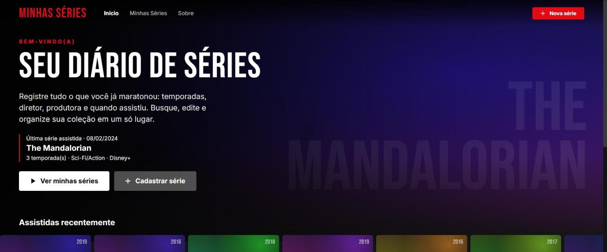
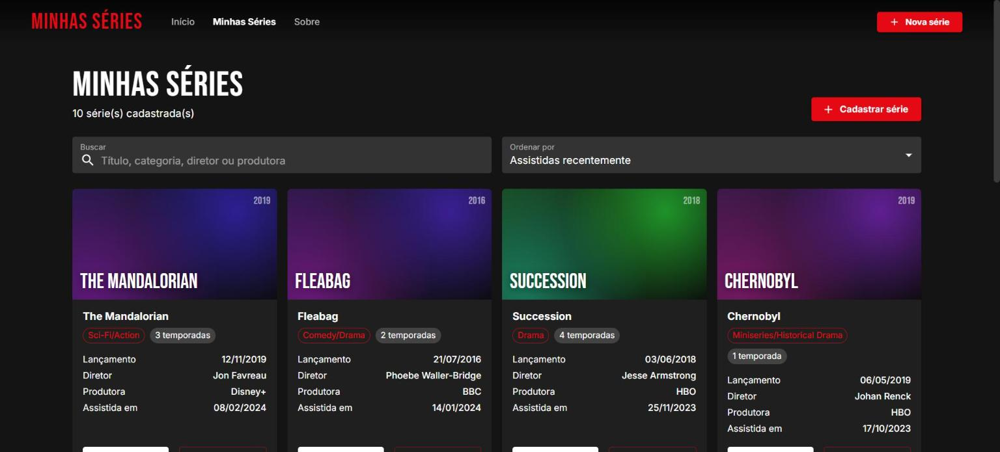
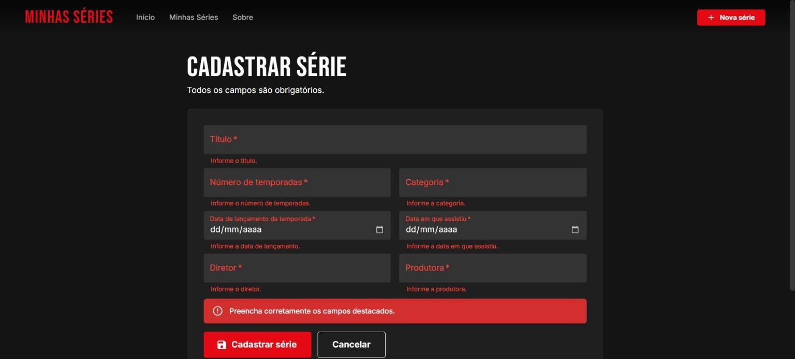
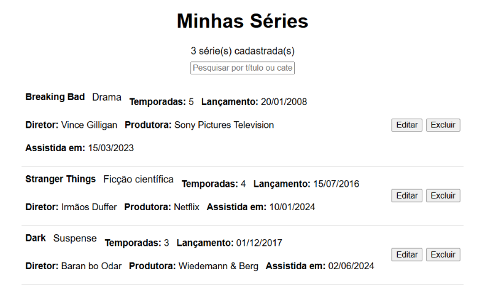

Projeto acadêmico • Fases 1 e 2 • 2026
Minhas Séries
Uma aplicação em React para registrar as séries que você assistiu. Na Fase 2, ela passou a buscar e salvar os dados em uma API REST, ganhou um visual escuro inspirado em plataformas de streaming e testes automatizados.

O que a aplicação faz
A aplicação guarda as séries que a pessoa assistiu: título, número de temporadas, data de lançamento da temporada, diretor, produtora, categoria e data em que assistiu. Ela tem estas telas:
- Início, que recebe o usuário e mostra a última série assistida e fileiras de séries, no estilo das plataformas de streaming;
- Minhas Séries, com todas as séries em cartões, busca por título, categoria, diretor ou produtora, ordenação e os botões de editar e excluir em cada cartão;
- Cadastro e Editar, que usam o mesmo formulário (na edição, ele já vem preenchido);
- Sobre, que apresenta o projeto.
Integração com a API
Todos os dados vêm da serieJournal-api, uma API REST fornecida pela disciplina. Usei o Axios para fazer as requisições: GET para listar e buscar uma série, POST para cadastrar, PUT para editar e DELETE para excluir. Por isso, as alterações continuam salvas mesmo depois de recarregar a página.
Concentrei todas as chamadas em um único arquivo, services/api.js. As páginas só chamam funções como listarSeries() ou criarSerie(), sem saber os detalhes do Axios. Enquanto espera a resposta, a tela mostra um indicador de carregamento. Se a API estiver fora do ar, aparece uma mensagem explicando o problema e um botão para tentar de novo.
Durante os testes, descobri que a API reinicia sozinha toda vez que grava os dados, então a requisição logo depois de salvar às vezes falhava. Resolvi isso com um interceptor do Axios, que tenta de novo automaticamente quando o servidor não responde.
Visual
Usei o Material UI com um tema próprio: fundo quase preto, vermelho de destaque e títulos na fonte Bebas Neue, inspirados em plataformas de streaming. A barra de navegação fica transparente no topo e escurece ao rolar a página. Como a API não fornece imagens, criei um "pôster" para cada série com degradês gerados a partir do título, e o mesmo título sempre tem as mesmas cores.
Validação e feedback
O formulário confere se todos os campos foram preenchidos, se o número de temporadas é um inteiro maior que zero e se a data em que a série foi assistida não é anterior ao lançamento nem futura. Os campos com erro ficam em vermelho com a sua mensagem. Antes de excluir, a aplicação pede confirmação, e cada ação mostra um aviso de sucesso ou de erro.
Testes
Escrevi 21 testes com Vitest e React Testing Library. Eles cobrem as regras de validação, a busca e a ordenação da lista, e as páginas de listagem, cadastro e edição, incluindo exclusão com confirmação e erro de conexão. A API é simulada nos testes, então eles rodam sem precisar do servidor.
Telas da Fase 2


Como era na Fase 1
A Fase 1 era só front-end: os dados ficavam na memória e voltavam às três séries de exemplo quando a página era recarregada. Na Fase 2, troquei esse estado local pelas requisições à API, substituí o CSS próprio pelo Material UI e acrescentei os testes.

Como rodar
A aplicação precisa da serieJournal-api rodando. Em um terminal:
git clone https://github.com/adsPucrsOnline/DesenvolvimentoFrontend.git
cd DesenvolvimentoFrontend/serieJournal-api
npm install
npm startEm outro terminal, dentro da pasta do projeto:
npm install
npm run devPara rodar os testes, use npm test.